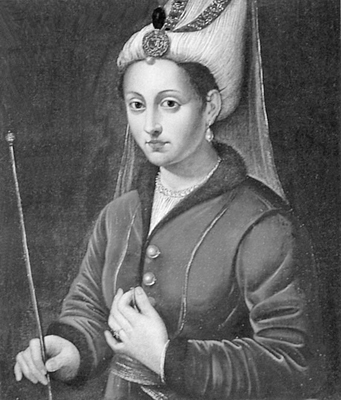

Mektuplar kaçıp gelse şenlikli İstanbul’dan
Gün ağarırken zülfünün güzel kokusunu alırım Bağdat’tan
Gül yüzünden uzak kalalı nice canlar verdim
Geceleri sabahlara kadar feryat ederim...
Kanuni’nin Hürrem Sultan’a yazdığı bir şiirden
Karadeniz’den süzüle süzüle Boğaz’a giren ve esir taşıyan köhne geminin küpeştesine dayanıp, hüzünlü gözlerle denizi seyreden onlarca esirden biriydi. Kendisini hiç tanımadığı, dilini bilmediği bir diyara sürükleyen yolculuğa lanet ediyordu. Doğduğu topraklardan koparılmış, zamanın en kudretli imparatorluğunun başkentine götürülen bu genç kızın gözlerinde, diğerlerinin aksine, vahşi bir parıltı vardı...
Anastasia’nın hayat çizgisini değiştiren şey, henüz genç bir kızken, memleketi Ukrayna’ya yapılan akınlardan birinde esir edilip satılması olacaktı. İstanbul’a getirilen Anastasia, Osmanlı sarayına alındı; ancak ilk günlerini Topkapı Sarayı’nda değil, muhtemelen Kırım, Manisa veya İstanbul’daki diğer saraylardan birinde geçirdi.
Geçen süre içinde daha da serpilip güzelleşmesi ve saray adabını öğrenmesinden sonra, Kanuni’nin veziri ve aynı zamanda ona kardeşi kadar yakın olan İbrahim Paşa, Anastasia’yı Topkapı Sarayı’na getirdi. Bu zaman dilimi içerisinde tüm günlerini haremde diğer cariyelerle beraber geçiren Anastasia, kısa zamanda, hamam sefaları, giyim kuşam ve süslenmeden ibaret olan bu hayattan sıkılacak ve asi bir genç kız rolüne bürünecekti. Hareme girdiği andan itibaren sergilediği neşeli ve şen şakrak tavırları sebebiyle, bu anlamlara gelen Hürrem ismi verilmişti kendisine.
İlk kez göz göze geliş...
Hırçınlığı ile ünlenen Hürrem’in yine bir gün haremi birbirine kattığı sırada Kanuni Sultan Süleyman, annesi Hafsa Sultan’la birlikte oradan geçiyordu. Sesleri duyan Sultan Süleyman, içeri girdiğinde Hürrem’i gördü ve çok etkilendi. Harem ağasına, Hürrem’i rahat bırakmasını ve incitmemesini emretti. Anastasia bu olaydan sonra padişah tarafından tanınmış ve Hürrem Sultan ismiyle anılacağı, hayatının bir sonraki aşamasına geçmişti.
Hürrem Sultan, Kanuni Sultan Süleyman’ın hayatına giren üç kadından biri oldu. Zaman içerisinde diğer iki kadının ismi silinip giderken, o her geçen gün daha da parlayacaktı. Bu yolda ilerlemek için çok çaba sarf ediyordu. Gülfem ve Gülbahar Mahidevran Sultanları haremden silmek için türlü oyunlar oynadı. Bu, bir kadının kendini eşine kabul ettirebilme, tek ve eşsiz olma çabasıydı; destansı bir gayretle...
İsimlerinin önünde şatafatlı unvanlar olsa da zamanının en kudretli adamının kalbine giden yolda, onlar da diğer kadınlardan farklı tepkiler vermeyeceklerdi. Ama tarihe, kadınsı yeteneklerini hançer kıvraklığında kullanan Hürrem geçecekti...
Aralarındaki çekişme o kadar şiddetliydi ki Hürrem Sultan’ın Kanuni Sultan Süleyman nezdinde daha ön planda yer almasına tahammül edemeyen Mahidevran Sultan, bir gün Hürrem Sultan’la saç saça, baş başa geldi. Hürrem’in saçlarını yoldu, yüzünü tırmaladı, canını acıttı. Ancak bu kavga, Mahidevran Sultan’ın beklediği sonucu vermemiş, bilakis, kendi eliyle kendi ipini çekmiş olmuştu. Çünkü bu kavgadan sonra Hürrem Sultan’ı huzuruna çağıran Sultan Süleyman, Hürrem tarafından reddedilmişti. Olacak şey değildi. Birisi, Kanuni’ye “Hayır!” diyordu. Hürrem zekiydi, ince hesaplar konusunda uzmandı ve sonradan öğrendiği Türkçeyi mermi gibi kullanabiliyordu. Nedenini sorduğunda Kanuni’ye şu mesajı gönderecekti: “Yüzüm gözüm çizili, kolum bacağım morarmış bir şekilde Sultan’ın huzuruna çıkmaya layık biri değilim. Eğer bu şekilde huzurunuza çıkarsam sizin büyüklüğünüzü zedelerim.”
Bu sözü duyan Padişah, eşini ikinci bir emirle huzura çağırdı. Hürrem Sultan, ağlayarak Kanuni’nin ayaklarına kapandı ve başından geçenleri anlattı. Olayı, Hürrem’in ağzından abartılı bir şekilde dinleyen Padişah, kararını vermişti: Mahidevran Sultan saraydan ayrılacak ve Manisa’da sancak beyi olan oğlu Mustafa’nın yanına sürgüne gönderilecekti. Artık Hürrem Sultan, Osmanlı Sarayı’nın ve Kanuni Sultan Süleyman’ın tek kadınıydı. Hürrem Sultan’la Mahidevran Sultan arasındaki hakimiyet kavgasına neden olan olaysa, Padişah’ın, ilk şehzadesi Mustafa’yı doğuran Mahidevran Sultan’dan sonra Hürrem Sultan’dan da bir çocuk sahibi olmasıydı. Sonradan gelen öne geçmişti...
Ya nikâh, ya berat...
İlk çocuğu Mehmet doğduğunda Hürrem Sultan’ın içini büyük bir korku kaplamıştı. Çünkü Kanuni Sultan Süleyman’ın daha önce doğan bir oğlu vardı ve babasından sonra muhtemelen o tahta geçecekti. Üstelik, taht kavgalarını önlemek üzere diğer veliahtların ortadan kaldırılmasına cevaz veren Fatih Yasası da halen yürürlükteydi. Amma velakin Hürrem Sultan’da her şeyin çaresi bulunurdu. Bir kez daha kıvrak zekâsını devreye soktu. Padişah’a,“Sana bir erkek evlat doğurduğuma göre artık kölelikten çıktım. Gelenekler, benim özgür olduğumu söylüyor. Ya beni nikâhına al, eşin olayım ya da bize izin ver; çocuğumu alıp gideyim” teklifinde bulundu.
Sultan Süleyman gözü gibi sakındığı eşinin gitmesine tabii ki razı olmayacaktı. Bununla beraber, gelenekler de ortadaydı. Padişah, gayrimüslim bir cariyeyle nikâhlanamazdı; daha önce böyle bir uygulamanın örneği yoktu. Zor bir karar aşamasında olan Padişah, Hürrem Sultan’ın talebini kabul etti; ancak sözüne güvenmesini ve bir süre beklemesini istedi. 1521 yılında Şehzade Mehmet’i dünyaya getiren Hürrem Sultan’ın daha sonra birer yıl arayla diğer çocukları doğdu. Mehmet’i Mihrimah, Abdullah, Selim, Beyazıt ve Cihangir izledi.

Hürrem Sultan’ın en bilinen tasviri
İlk beş çocuğunu dünyaya getirdikten sonra, Hürrem Sultan muradına nail olacaktı. 1530 yılında Topkapı Sarayı’nda gerçekleşen görkemli bir düğün töreni ve nikâhla padişah, Hürrem Sultan’a “haseki” unvanını veriyordu. Günler süren şenlikler sırasında Atmeydanı’nda (Bugünkü Sultanahmet Meydanı) cambaz, hokkabaz, cirit gösterileri yapıldı, savaş oyunları sergilendi. Kanuni, tören sırasındaki şenlikleri harem halkı ile birlikte izlemişti. Bu tören aynı zamanda Hürrem Sultan’ın şehzadeleri için bir sünnet düğünü olarak da düzenlenmişti.
Hürrem Sultan, Padişah’ın eşi olduğu ilk on yılda ‘cariye’, sonrasından ölümüne kadar geçen sürede ise ‘Haseki Sultan’ sıfatıyla saraydaki yerini almış oluyordu. Nikâhın hemen sonrasında altıncı ve son çocuğu Şehzade Cihangir’i doğuracaktı. Padişahın nikâhlı eşi olarak ona çocuk doğurmak, saray hiyerarşisi içinde oldukça önemliydi. Ancak bir sorun vardı: Şehzade Cihangir engelli idi. Bu nedenle ilerleyen yıllarda sarayda kalan Cihangir, din, sanat ve tarih eğitimi alacak, pek ortalıkta görünmeyecekti.
Sarayın tek hâkimi oluyor
Sultan Süleyman’ın nikâhına girmesi ile birlikte sarayda ve Osmanlı yönetiminde ağırlığı artmaya başlayan Hürrem Sultan, kayınvalidesi Hafsa Sultan’ın hayatını kaybetmesiyle birlikte özgürlük alanını daha da genişletmişti. Şimdi, iktidarını sağlama alma ve yayma vaktiydi. Her hamlesini bir satranç ustası gibi, inceden inceye planlıyordu.
Kendi oğullarından birini tahta geçirmek için yaptığı manevraların ilki, kızı Mihrimah Sultan’ı Diyarbekir Beylerbeyi Hırvat asıllı Rüstem Paşa ile nikâhlamak oldu. Bu olay, hem Rüstem Paşa hem de Hürrem Sultan için karşılıklı bir çıkar ilişkisi ve ikbal kaygısına dayanıyordu. Damat Rüstem Paşa, Diyarbekir Beylerbeyliğinden Kubbe Vezirliği’ne atanarak İstanbul’a geldi. Hürrem sağlam bir müttefik kazanmıştı. Arkasından da rakip şehzade Mustafa, Manisa’dan Amasya sancağına gönderildi ve onun yerine Hürrem Sultan’ın büyük oğlu Şehzade Mehmet atandı.
Hürrem Sultan, Padişah üzerindeki nüfuzunu bir taraftan atamalar için kullanırken, diğer taraftan da bazı siyasi gelişmelere etkide bulunuyordu. Gücünün artmasıyla birlikte sebep olduğu ilk büyük olay, Padişah’ın çok yakını ve sırdaşı olan İbrahim Paşa’nın idamı olacaktı. Hürrem, kendisini genç bir kızken saraya sokan adamı canından etmişti!
Görünüşe göre Osmanlı tahtına Sultan Süleyman’dan sonra Şehzade Mustafa oturacaktı. Hürrem Sultan, İbrahim Paşa’nın Şehzade Mustafa’yı desteklediğine inandığı için Padişah’ı ona karşı doldurmuş, bunun için Paşa’nın tahta göz diktiğini söylemekten bile kaçınmamıştı. Hürrem Sultan, Padişah’ı ikna edince İbrahim Paşa kellesinden oldu. Bu idamın gerçek sebebi tam olarak aydınlanamamış olsa da herkes işin arkasında Hürrem Sultan’ın olduğunu biliyordu. Bu olayı Şehzade Mustafa’nın öldürülmesi takip edecekti...
Tahtın varisleri saf dışı ediliyor
Şehzadelerden Abdullah henüz çocukken, Mehmet ise o günlerde hayatlarını kaybetmişlerdi. Mehmet’in ölümüyle tahta yeni varis aranmaya başlandı. İki oğlunu yitiren Süleyman’ın dört oğlu kalmıştı: Mustafa, Selim, Bayezid ve Cihangir. En büyükleri olan Şehzade Mustafa, muhtemel varis olarak görünüyordu. Oysa değişik planları olanlar vardı...
Padişah eşi olmak, Hürrem’e yetmiyordu. Kararlıydı; köle olarak dâhil olduğu bu iktidar oyununun patronu olacaktı. Bunun yolu da oğullarından birini tahta oturtmaktan geçiyordu. Kanuni artık ihtiyarlamış, saraya çekilmişti. Halkın ve ordunun gözdesi Şehzade Mustafa, babasının yerini almak için tetikte bekliyordu. Hürrem ise Kanuni’nin yerine oğlu Bayezid’i geçirme planları yapmaktaydı. Müttefiki ve damadı Rüstem Paşa ile kafa kafaya verip komplolarını hazırlamaya başladılar: Şehzade Mustafa bertaraf edilecekti.
Rüstem Paşa İran Seferi’ne gönderildiğinde, plan gereği, bir dedikodu yayılmaya başlandı: Şehzade Mustafa, taht uğruna isyana hazırlanıyordu. Şehzade Mustafa’nın etrafındakiler: “Babanız kocaldı, seferden, hareketten kaldı. Bu yüzden Vezir-i Azam’ı Serdar edip sefere saldı. Kendi arzusuyla sizi yerine geçirmeyi düşünmüyor bile. Buna Rüstem Paşa manidir. Varıp Rüstem Paşa’nın başını kesseniz. Cümle asker sizi ister. Koca padişah dahi kalan ömrünü Dimetoka’da taat ve ibadetle geçirsin” diyorlardı.
Dedikodular Kanuni’yi korkuttu, oğlunun kendi saltanatına göz diktiğine inanmaya başlamıştı. Oysa kulağına gelenler, senaryosu Hürrem ve Rüstem Paşa tarafından yazılmış bir düzmeceydi. Bu oyuna gelen Kanuni, kararını verdi: Oğlu Mustafa’nın kellesi alınacaktı!
Tamamen bu sebeple İran Seferi’ne katılmaya karar veren Kanuni, oğlunu çadırına çağırdı. Şehzade Mustafa olup bitenlerden habersizdi. Babasının çadırı önüne gelince atından indi, Kanuni’nin devlet erkânı Şehzade’yi içeri aldı. Şehzade Mustafa içeri girip de babasını göremeyince etrafa şaşkınlıkla bakındı ve ilk gördüğü şey yedi cellat oldu.
Hürrem, amacına ulaşmış, Mustafa artık bir tehdit olmaktan çıkmıştı. Olayda Rüstem Paşa’nın parmağı olduğundan şüphelenen ordu çalkalanmaya başladı. Ordudaki hoşnutsuzluk Rüstem Paşa’nın görevden alınmasıyla giderilecekti. Kanuni ise daha sonra, kendi oğlunu öldürttüğü için kahrolacak, şiddetle yasını tutacaktı.
İlk perdesi başarıyla sahnelenen bu oyunun ikinci perdesi Hürrem için sürprizlere gebeydi. Hürrem, Kanuni’den önce ölünce, biricik oğlu Bayezid’i tahta geçirme planları da onunla birlikte ölmüştü! Zira Kanuni, Bayezid’i atlayarak, Şehzade Selim’i imparatorluğa varis kılmıştı. Annesinin genleriyle hareket eden Bayezid, babası Kanuni ve kardeşi Selim’i yok etmeye yönelik çalışmalara başladı. Ama sonuçta kendi canından olacaktı. Zira olan biteni fark eden Sultan ve veliaht, Bayezid’in katline ferman verdi. Bayezid, annesinin hırsının kurbanlarından biri olarak tarihin sayfaları arasında yitip gitmişti...
Bu acılı olayı ve diğer çocuklarının kaybını üst üste yaşamış olan Sultan Süleyman ve Hürrem Sultan, ilerleyen yaşlarında geçmişe göre biraz daha suskun ve mahzundular. Padişah ve eşi, son yıllarını daha çok kendilerine ayırarak, yazları İstanbul’da, kışları ise Edirne’deki Kavak Sarayı’nda geçirdiler. Bu sırada Kanuni Sultan Süleyman damla hastalığına yakalandı. Hürrem Sultan’ın ise verem olduğundan bahsediliyordu.
Hürrem Sultan, 1558 yılının kış aylarında rahatsızlıkları artınca bir araba ile İstanbul’a getirildi. 17 Nisan 1558’de Beyazıt’taki eski sarayda hayata gözlerini kapadı. İntikam, entrika, aşk ve iktidar hırsıyla örülmüş bir hayat daha tarih olmuştu.
Cenaze namazı Osmanlı’nın önemli din âlimlerinden Ebussuud Efendi tarafından kıldırılan Hürrem Sultan, Süleymaniye Camii’nin bahçesine defnedildi. Hayatın, saray kavgalarının, bundan da ötesi, devlet işlerinin tam ortasında olan Hürrem Sultan, oğullarından birini Osmanlı tahtının varisi olarak görmek için akıl almaz işler yapmıştı. Ancak eşinden önce vefat ettiği için bunu görmeye ömrü vefa etmedi.
İran’la savaş, Lehlerle barış
Rusça bilmesi, sanat ve edebiyattan anlaması ve Padişah’ın çok yakınında kalarak siyasi gelişmelere tanıklık etmesinden dolayı Hürrem Sultan’ın önemli diplomatik gelişmelerde de rolü vardı. Sözgelimi, 1547’de, tahta çıkmak için Osmanlı’dan destek almaya gelen İran şehzadelerinden Burhan Ali ve Elkas Mirza’ya ayrı ayrı yardım etmişti. Onlar adına törenler düzenleyen ve misafirperverlik gösteren Hürrem Sultan, aynı zamanda 1548’de gerçekleştirilen Elkas Seferi’ni de tetiklemişti. Savaşın nedeni, bizzat Hürrem Sultan değildi şüphesiz; ancak şehzadelerin Osmanlı’ya sığınması ve buradan yardım almaları iki ülkenin arasını bozmuştu.
İran’a sefer düzenleyen Sultan Süleyman, yirmi ay boyunca İstanbul’dan uzak kaldı. Padişah’ı savaşa girme konusunda etkileyen Hürrem Sultan, bununla, hem damadı Rüstem Paşa’nın askeri yeteneklerini Padişah’a sergilemesine zemin hazırlamayı amaçlamış hem de Manisa’daki Şehzade Selim’in devlet işlerinde deneyim kazanmasını ve sefere çağrılmayan Şehzade Mustafa’nın geri planda kalmasını ummuştu. Bir taşla kuş katliamı yapmak istemişti yani. Yine, Elkas Seferi’nden dört yıl sonra çıkılan Doğu Seferi’nde de Hürrem Sultan’ın etkisi olduğu iddia edilir. İran’la savaştığı bu dönemde Osmanlı, Hürrem’in soydaşları olan Ruslar ve Lehlerle barış içinde yaşamıştı.
Kocası seferde iken çoğunlukla İstanbul’da kalan Hürrem Sultan, yazdığı mektuplarla eşine payitahttan gelişmeleri aktarıyor, memleketin genel gidişatı, yaşanan toplumsal ve ekonomik olaylarla ilgili bilgiler veriyordu.
Hem sultan hem âşık
Saraya çok genç yaşta cariye olarak giren Hürrem, Osmanlı Sultanı’nın gönlünü fethederek, nikâhlı eşi olmayı başarmıştı. Gayrimüslim bir kadının padişahın nikâhına girmesi, Osmanlı’da ilk kez rastlanan bir olaydı. Bu sebeple Hürrem, hakkında hep şüphe duyulan bir isim oldu. Çünkü Osmanlı saray geleneklerine rağmen padişahın nikâhına girebilmesine kimse anlam veremiyordu. Bu yüzden de Hürrem Sultan’ın Kanuni Sultan Süleyman’a büyü yaptırarak kendisine bağladığı iddiaları yayılmıştı. Hatta bu büyü iddiaları, dönemin Venedik ve Alman elçilerinin raporlarına da yansımıştı. Ancak belki de bu büyü, aşk büyüsüydü. Zira Osmanlı’nın Muhteşem Süleymanı Hürrem’i ilk gördüğü anda âşık olmuştu. Hatta ilk karşılaşmaları Kanuni’nin vakanüvistinin kaleminden şu şekilde kayıtlara geçiyordu:
“Zamanın İstanbulu’nda güzelliğiyle meşhur Çerkez, Gürcü kızlarının önünde garip adımlarla dolaştı. Aniden sevecen, içten bir yüzün karşısında durdu. Bu yüze bir bakış fırlattı. Bu, alışılmadık, biraz yabancı bir güzellik taşıyan bir yüzdü. Tatlı gülümsemesi, yeşil gözleri, uzun kirpikleri vardı. Hiç mi hiç beklenmedik bir şekilde bu gözlere teslim oldu...”
Birlikte oldukları zaman süresince de Kanuni’nin Hürrem’e olan aşkı devam etti. Padişah’ın sefere çıktığı zamanlarda bu aşk, şiirlere, nesirlere ve mektup satırlarına döküldü. Kanuni eşine, ‘Muhibbi’ mahlasıyla gazeller yazıyor, Hürrem Sultan ise yazdığı mektuplarda ona duyduğu büyük aşkı dile getiriyor; ‘Benim padişahım, şahım, sultanım’, ‘İki gözümün nuru, sermayesi’, ‘Benim devlet güneşim, saadetimin sermayesi sultanım’ gibi ifadelerle sesleniyordu Kanuni’ye. Uzun süren seferler sırasında yazdığı mektuplardan birinde şöyle diyordu:
“Sevgili Padişahım, yüzümü yere koyup, mutluluk sığınağı ayağınızın topraklarını öptükten sonra... Benim devletimin güneşi ve saadetimin sermayesi sultanım, eğer bu ayrılık ateşine yanmış, ciğeri kebap, sinesi harap, gözleri yaş dolu, gecesi gündüzü belirsiz, hasret deryasına gark, biçare, aşkınız ile müptela, Ferhat ile Mecnun’dan beter şeyda kölenizi sorarsanız; ne zamandır ki sultanımdan ayrıyım, bülbül gibi ah u feryadım dinmeyip, ayrılığınızdan dolayı öyle bir halim var ki Allah, kâfir olan kullarına dahi vermesin.”
Yine bu mektuplarda hem sevgisini hem de sosyal ve siyasal konularla ilgili gelişmeleri aktaran Hürrem Sultan, sefer ve ayrılık uzadıkça yaşadığı ıstırabı da satırlara döküyordu. Sultan’dan haber alamadığı için rahat yüzü görmediğini, yeryüzünün kendisine dar geldiğini ve gece gündüz ağladığını söylüyordu. Sultan Süleyman’ın da aşkını dile getirme konusunda ondan aşağı kalır yanı yoktu:
“Benim birlikte olduğum, sevgilim, parıldayan ayım, can dostum, en yakınım, güzellerin şahı sultanım. Hayatımın, yaşamımın sebebi cennetim, Kevser şarabım. Baharım, sevincim, günlerimin anlamı, gönlüme nakşolmuş resim gibi sevgilim, benim gülen gülüm. Sevinç kaynağım, eğlenceli meclisim, nurlu parlak ışığım, meşalem. Turuncum, narım, narenciyem, hayatımın aydınlığı. Gönlümdeki Mısır’ın sultanı, varlığımın anlamı, İstanbulum, Karamanım, Bütün Anadolu ve Rum ülkesindeki diyara bedel sevdiğim.”
Satırlarca güzel sözü ve iltifatı arka arkaya sıralayan, eşi için en güzel betimlemeleri yapan Padişah, şiirlerinde de bu aşkı dile getiriyordu:
“Sorma aşkın hâletin Mecnun’a bir dîvanedir/Açma aşkın sırrını Ferhad’a kim efsânedir/Sor bana aşkın rumuzun sânâ takrir eyleyen/Can u baş terkin urur âşık hemen pervânedir.”
NOTLAR